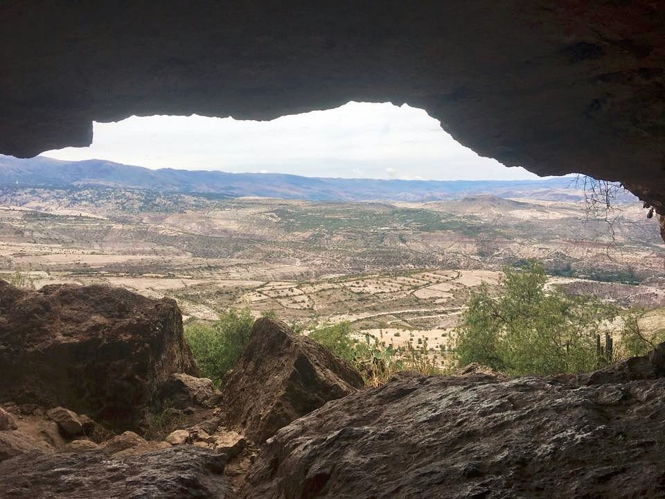
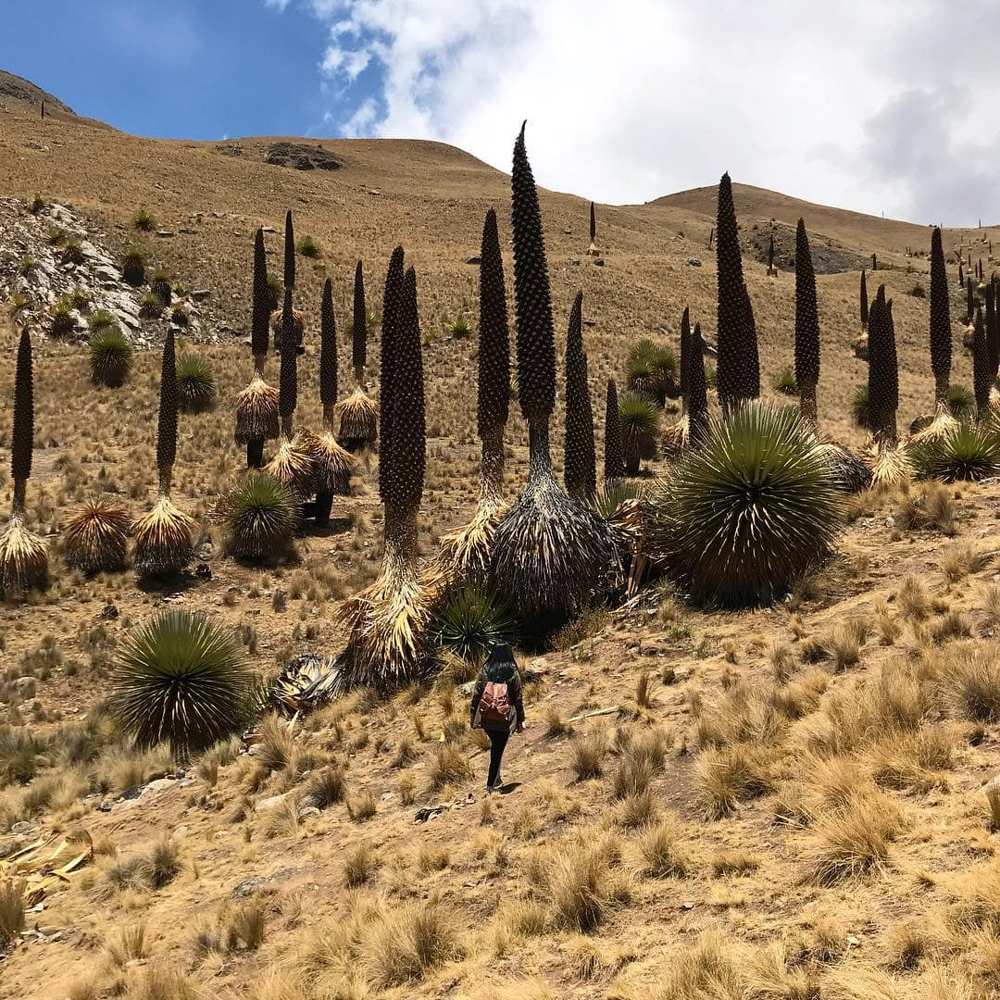
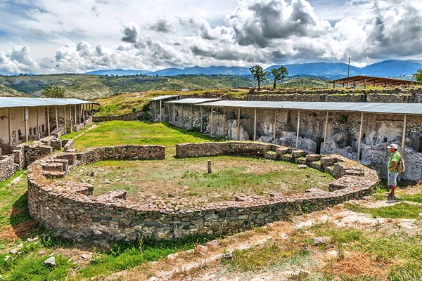

DESTINOS TURISTICOS DEL DEPARTAMENTO DE AYACUCHO
Ayacucho, es una hermosa ciudad de la zona sur central de Perú. En este artículo conoceremos los mejores lugares turísticos de Ayacucho, desde bosques de Puyas de Raimondi hasta antiguas y encantadoras iglesias coloniales.
CUEVA DE PIKIMACHAY
Pikimachay es una cueva que tiene aproximadamente 24 m de ancho y 12 m de alto y se encuentra en el centro del cerro Allqowilka. Se han encontrado instrumentos líticos del paleolítico andino y restos óseos de animales hoy extintos, cuya antigüedad data de 20.000 a 15.000 años a. C. Visitar esta cueva nos hace viajar al pasado para descubrir cómo era el hábitat de los primeros pobladores de esta zona.
AGUAS TURQUESAS DE MILLPU

Cuando una foto vale más que mil palabras. El color intenso de las Aguas Turquesas de Millpu sorprende a cada persona que las visite. Durante los últimos años este se ha convertido en el destino preferido de los viajeros que llegan a esta región del Perú. Cómo llegar a las Aguas Turquesas de Millpu: Si quieres llegar por tu cuenta, te recomendamos revisar nuestro artículo todo lo que debes saber sobre las Aguas Turquesas de Millpu. En Denomades ofrecemos un tour a las Aguas Turquesas de Millpu que incluye transporte y guía.
TITANCAYOC
Se trata de el bosque de puyas de Raymondi más grande de todo el Perú. Se encuentra a 4200 msnm y posee 2 mil 270 hectáreas. Desde 2010 está protegido por el estado, por lo que visitarlas garantiza una experiencia auténtica de la naturaleza de este particular ecosistema. Las puyas florecen cada 80 años, y una sola vez en su vida, en un espectáculo de la naturaleza sinnigual. Cómo llegar a Titancayoq: Para llegar debes dirigirte hacia el sur desde la ciudad de Ayacucho, en el km 101 de la carretera a Vilcashuamán encontrarás señales que indicarán la entrada al bosque.

Ir a conocer cascadas siempre es un buen panorama. Y es que el poder del agua cayendo, el sonido y la humedad de su agua en la cara es una experiencia muy potente. Ayacucho esconde algunas sombrosas y poderosas cascadas. Es el caso de la cascada Pumapaqcha, que se puede observar en la fotografía. Cómo llegar a las Cascadas de Cangallo: En Denomades ofrecemos un tour por las Cascadas de Cangallo, donde la primera catarata que conoceremos será Pumapaqcha. Luego, visitaremos la catarata de Batan y, posteriormente, continuaremos la caminata por un túnel para visitar la tercera cascada de Qorimaqma.
VILCASHUAMÁN

La huella histórica del imperio Inca la encontrarás en el complejo arqueológico de Vilcashuamán. En esta ciudad encontrarás vestigios en piedra pulida, clásica de la arquitectura Inca. En Vilcashuamán se encuentra porsupuesto el Templo del Sol y Templo de la Luna, además del famoso Ushnu que se observa en la fotografía. Cómo llegar a Vilcashuamán: Desde el terminal sur de Ayacucho puedes tomar un bus con destino a Vilcashuamán, este te dejará muy cerca del complejo arqueológico después de cuatro horas de camino. En Denomades ofrecemos un tour Vilcashuamán desde Ayacucho, donde podrás conocer la riqueza histórica detrás de este complejo de la mano de uno de nuestros guías expertos.
PAMPA DE AYACUCHO

Estar en espacios abiertos otorgan una sensación de libertad difícil de encontrar en cualquier otro lugar. En la Pampa de Ayacucho se encuentra un santuario que conmemora la batalla del 9 de diciembre de 1824, batalla en la que se definió la independencia del Perú frente a España. Sin duda que aquí se respiran aires de libertad. Cómo llegar a Pampa de Ayacucho: tendrás que tomar un bus hasta el pueblo de Quinua y aquí un mototaxi que te lleve hasta el visitado monumento. También puedes hacerlo con Denomades, en nuestro tour de un día a la Pampa de Ayacucho.
PAMPA GALERAS

La Reserva de Pampa Galeras es el centro de conservación de vicuñas más grande del Perú. Se encuentra entre los 3800 y 5000 msnm y es uno de los lugares turísticos de Ayacucho más lejanos a la ciudad. Sin embargo, viajar a conocer sus amplios y hermosos paisajes vale completamente la pena. Cómo llegar a Pampa Galeras: A 870 km de Ayacucho, para llegar debes dirigirte por la carretera en dirección suroeste, como si fueras a Nazca. A la altura de ese kilometraje encontrarás señales para ingresar a la reserva.
COMPLEJO ARQUEOLÓLICO DE WARI
El complejo está dividido en sectores conformados por construcciones en piedra y barro, revestidos de un fino enlucido y cuenta con un sistema de agua y desagüe subterráneos. La mayor parte de las construcciones se encuentran enterradas. El lugar tiene un museo de sitio con objetos encontrados en la zona.